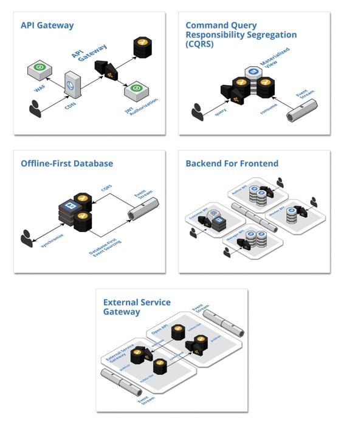

Boundary patterns
These patterns operate at the boundaries of cloud-native systems. The boundaries are where the system interacts with everything that is external to the system, including humans and other systems.

API Gateway: Leverage a fully managed API gateway to create a barrier at the boundaries of a cloud-native system by pushing cross-cutting concerns, such as security and caching, to the edge of the cloud where some load is absorbed before entering the interior of the system.
Command Query Responsibility Segregation (CQRS): Consume state change events from upstream components and maintain materialized views that support queries used within a component.
Offline-First Database: Persist user data in local storage and synchronize with the cloud when connected so that client-side changes are published as events and cloud-side changes are retrieved from materialized views
Backend For Frontend: Create dedicated and self-sufficient backend components to support the features of user focused, frontend applications
External Service Gateway: Integrate with external systems by encapsulating the inbound and outbound inter-system communication within a bounded isolated component to provide an anti-corruption layer that acts as a bridge to exchange events between the systems